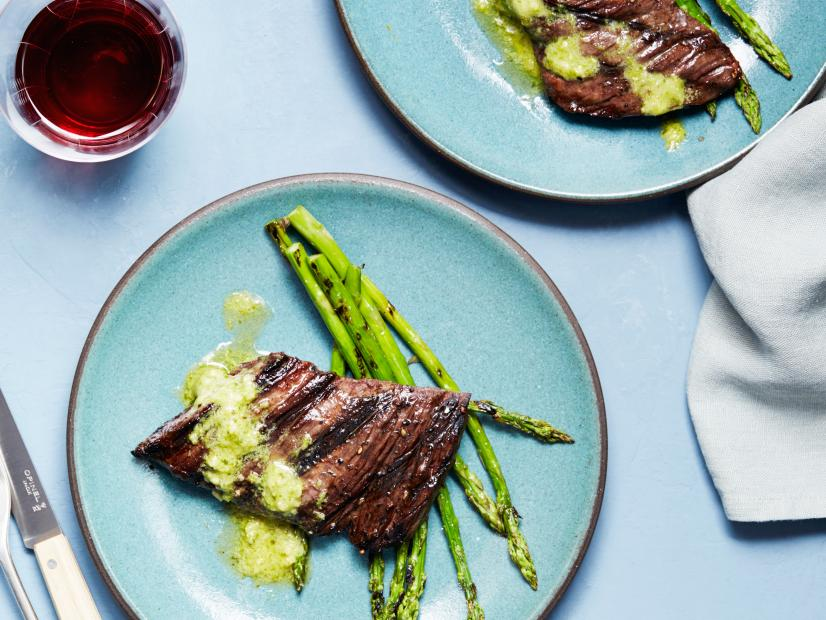
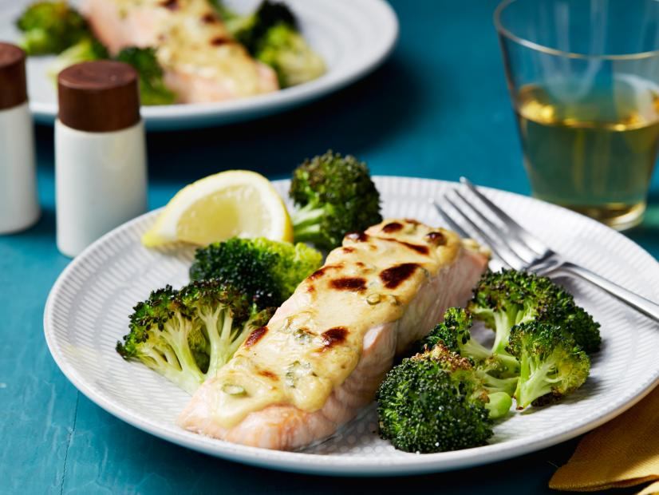

15-Minute Grilled Skirt Steak with Pesto Butter
Skirt steak, a super flavorful and quick-cooking cut of beef, is the star of this 15-minute dinner.
Topped with 2-ingredient pesto butter and served with grilled asparagus.
Ingredients:
- 1 1/2 pounds skirt steak
- 3 Tbsp canola oil
- Kosher salt and freshly ground black pepper
- 1/4 cup basil pesto
- 4 Tbsp unsalted butter
- 1lb this asparagus
Directions:
- Preheat a large cast-iron grill pan over high heat for 2 minutes.
Cut the skirt steak into 4 even pieces, rub with half of the oil and sprinkle liberally with salt and
pepper.
Cook, turning once, until charred on both sides and at the desired doneness, 6 to 10 minutes for
medium-rare (depending on thickness).
- Whisk together the pesto, butter and a pinch of salt and pepper in a small bowl.
- Trim the ends of the asparagus. Toss the asparagus with the remaining oil and a large pinch of salt and
pepper. Transfer the steaks to a cutting board to rest for a few minutes.
Working in batches if necessary, place the asparagus in a single layer on the grill pan and cook,
turning once, until charred in spots and crisp-tender, about 2 minutes.
- Divide the steaks and asparagus among 4 plates; top each steak with a dollop of the pesto butter. Serve
immediately.
See this steak recipe at foodnetwork.com

15-Minute Broiled Salmon and Broccoli
This easy sheet tray dinner comes together in a snap thanks to an oft-forgotten workhorse of the kitchen:
the broiler.
The high heat it provides perfectly chars pre-cut broccoli florets and cooks salmon quickly.
The creamy Dijon sauce acts as a protective barrier against overcooking, and keeps the fish moist in the
oven.
Ingredients
- One 12-ounce bag broccoli florets
- 2 tablespoons extra-virgin olive oil
- Kosher salt and freshly ground black pepper
- 2 scallions
- 1 medium lemon
- 1/4 cup mayonnaise
- 2 tablespoons Dijon mustard
- Four 6-ounce center-cut skinless salmon fillets
Directions:
- Preheat the broiler and set a rack 2 inches from the heat.
- On a large sheet tray lined with aluminum foil, toss the broccoli with the olive oil and a large pinch
of salt and pepper.
Spread the broccoli out into a singer layer. Broil the broccoli while you prepare the salmon.
- Thinly slice the scallions and finely grate the lemon zest, then add them to a small bowl with the
mayonnaise,
Dijon mustard and a pinch of salt and pepper. Whisk to combine.
- Remove the broccoli from the oven. (Parts of the broccoli should be lightly charred.)
Use a spatula to stir the broccoli and move it to the outer edges of the baking sheet.
Sprinkle each fillet all over with salt and pepper and place them in the center of the baking sheet.
Divide the mayonnaise mixture on top of the fillets, spreading to cover. Broil, rotating the pan halfway
through,
until the sauce has turned deep golden brown and the salmon is opaque, about 5 minutes. Meanwhile, cut
half of the zested lemon into wedges.
- Divide the salmon, broccoli and lemon wedges among 4 plates and serve immediately.